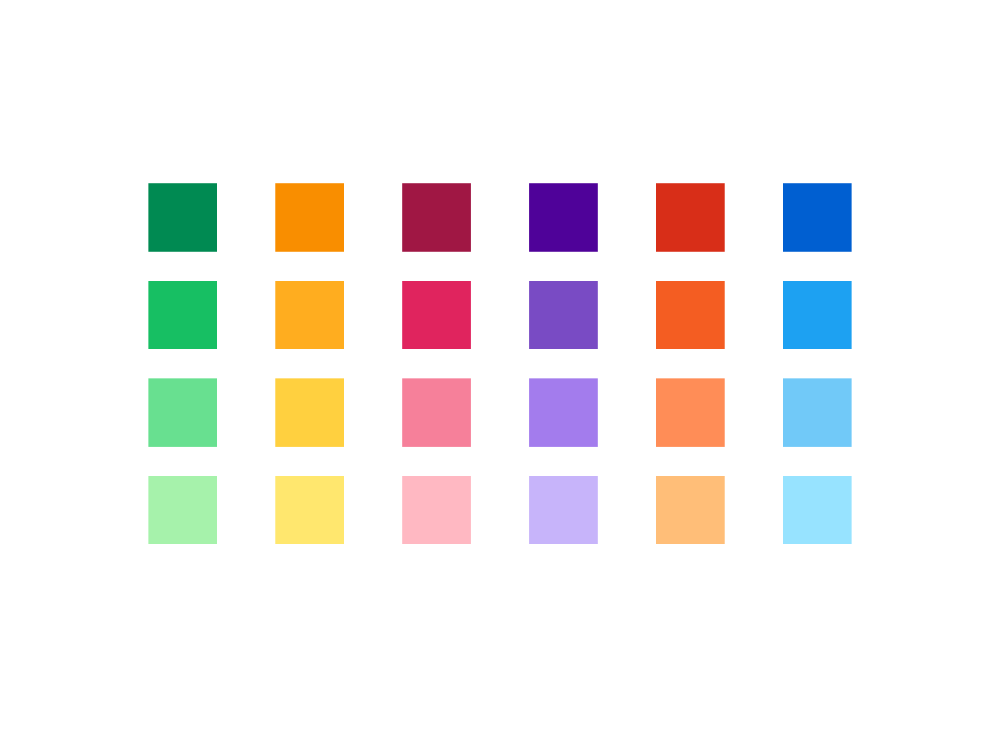
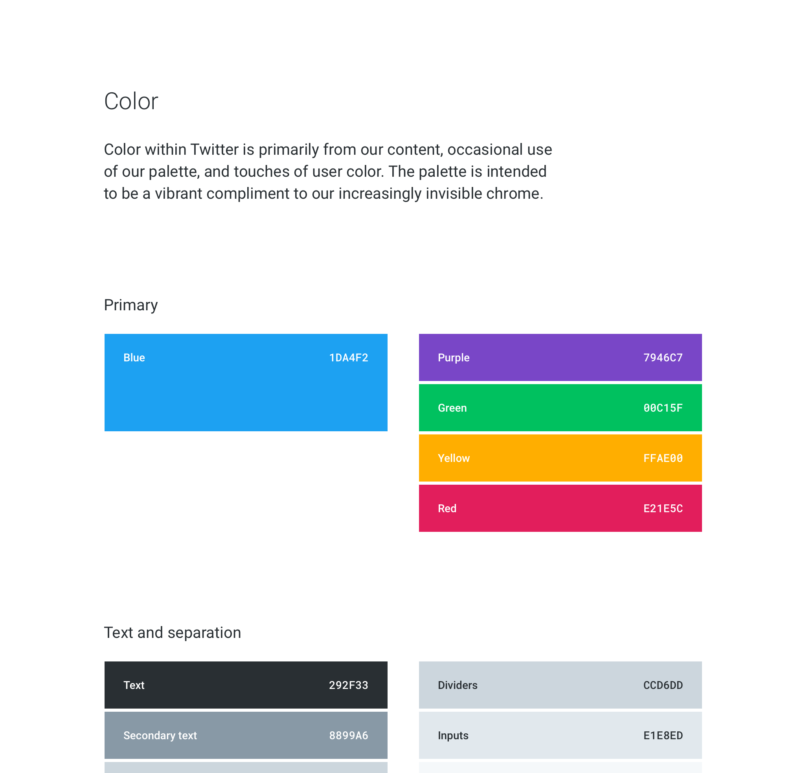
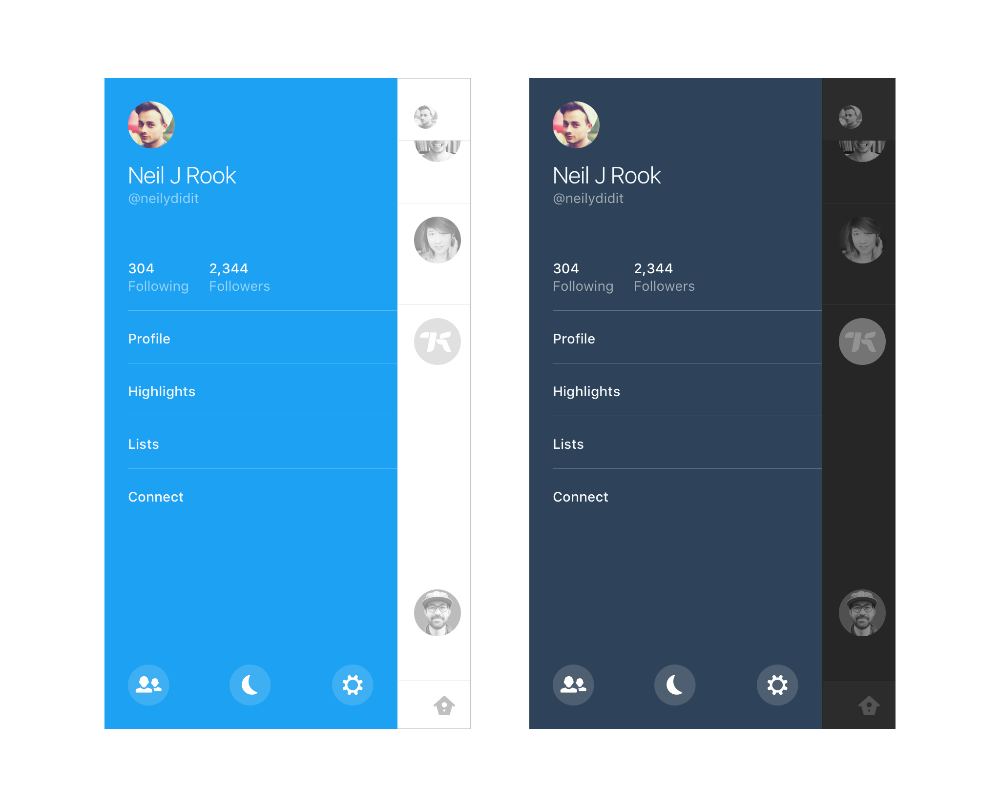

Sean Thompson, Designer
Bluebird
Even though I worked on this project two years ago, the Bluebird design language project was one that completely changed my experience on the Twitter design team for the better. It pushed me to think more critically about how Twitter should look and feel based on the utility it provides to the world.
My manager, now the Director of our studio, knew I had some free time, and challenged me to think about how to improve our useage of color, typography, and illustration with him.
We collaborated on writing about things like the significance of density for Twitter, and I created many examples that were intended to inspire our studio to create new and exciting experiences that embodied some of the principles we were writing about.
The results of the project were indirect but significant: members of the larger design team tried to incorporate ideas from the project into their daily work, and the project continues to challenge us to push the visual language of Twitter forward whenever we have an opportunity.

We explored different ways of reducing the prominence of our navigation, different ways of incorporating user-defined color, and larger typography and media.

We also tried to reserve color for important moments, such as messaging and temporary and actionable interfaces.

Another source of color that I explored during this project was user-defined color. Providing additional ways for the diverse personalities on Twitter to express themselves in public continues to fascinate me.

An exploration of applying color to content versus color within our own occasional messaging.
Color palette
One practical project that emerged from the Bluebird design language project was updating our color palette.
After exploring ways to improve Twitter visually, we realized that updates to our palette were easy to ship and immediately make an impact on how the product feels.
The more vibrant palette helped us prevent the interface from feeling too sterile as we looked for ways to reduce the presence of our navigation by making it transparent.

The latest iteration of our palette has two tones for each primary color. This gives us the flexibility to combine the two tones when laying benefits a composition, but also enables us to choose a light or dark version of a color based on subject we are using color for.

After the initial palette was created, we began to work with illustrators and content curators, so the need for a more extensive palette emerged.

As part of a larger system of materials for the studio, I maintained a small color site that helped coworkers apply color to their work.
Another aspect of our color palette that I worked on was Night mode. Night mode is one of the most-requested features by people who use Twitter, and a project I worked on during Hackweek focused on providing themes to people to choose from gave us a solid foundation to create Night mode from.

I wanted to avoid creating a dark palette that felt stark, and to tie the resulting palette back to our primary palette. To do so I derived all background colors from our primary blue hue.

Night mode is accessed on Android in our navigation drawer. Future plans include an automatic on/off setting based on current time of day.

A sample of the Hackweek project I worked on called Prism. People could select from a set of dark and light themes, and the work provided the technical foundation for a Night mode.
Navigation
As the amount of features on Twitter expanded, a need for a team dedicated to navigation updates emerged. A coworker and I collaborated on our first navigation project, which focused on proposing different navigation structures to help leadership evaluate how to add new features.
All explorations throughout this project were intentionally kept low-fidelity to focus on the structure of the product, and to keep the process open to ideas the many teams impacted by any navigation change.
The initial work resulted in us consolidating a few teams to work on content discovery together.

One of many explorations, this one simply proposed creating a single space to discover people and content.

We also explored ways to consolidate activity directed towards a person. This example consolidates a person’s direct message inbox with notifications.

This example consolidated all of our features into three destinations. The goal was to distinguish content that is highly personal (profiles and settings) from more public content, like Tweets in the Timeline and search.
During this navigation project, Jack Dorsey challenged us to imagine a Twitter experience that was centered around the Timeline with no other distractions. A coworker and myself were so excited about the prospect of a less complicated user experience, that we scheduled weekly after work sessions to explore different ways to simplify our experience.

We explored many examples like these, that reduced the perceived footprint of our navigation, to make more room for content.

We also explored how to make Twitter feel less complicated by making experiences that surround the Timeline feel less permanent and ancillary.
Dash
Originally a Hackweek, Dash is now a funded effort to create a space for secondary navigation related to personalization.
On both iOS and web there is not a space for settings, account switching and other user-related customization. While adding Night mode on Android was easy because we followed platform conventions and included a navigation drawer, iOS has no such space.

The drawer opens either by tapping on your avatar in our tab bar, or by edge swiping left anywhere within the app.

Because Night mode was a big reason part of the need to create a space for personalization, I also explored a palette for the drawer that was based on the time of day.

The morning and afternoon colors for the drawer.

The evening colors for the drawer.

Posters from Hackweek. Each poster represented a time of day.
Conversations
Having a threaded conversation with people on Twitter is currently very difficult. We do not have a threaded destination to read replies, and the structure of Tweets is so rigid that we do not indent or de-emphasize replies, even if they are near the content they are in response to.
This project is focused on addressing both the problem of there not being an accessible destination to participate in conversations on Twitter, and creating a better hierarchy between Tweets and replies to them.

This early example of a conversation view was part of an exploration of the benefits of introducing someone to a conversation at the bottom of a thread. New replies could be injected as a user is at the bottom, and they could scroll up to see previous replies and the original Tweet.

Another exploration of a conversation view that made media a more prominent part of a thread. The goal was to make all replies feel related to the original Tweet.

The most recent direction for a conversation view. Tapping Elon musk’s Tweet reveals the larger conversation. The media and avatar from the original Tweet persist in the header to help set the tone for the entire thread.